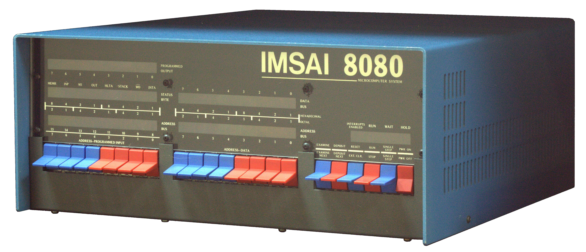

The Front Panel Was the Game
The IMSAI 8080 had no keyboard, no screen, no monitor in ROM — you were the boot loader, toggling every byte in by hand. And its manual shipped a game: a bit pattern circulating across the front-panel LEDs, played on the very same switches you used to program the machine.
The IMSAI 8080 has the most primitive interface in this museum. No keyboard. No screen. No operating system. In the basic configuration, not even a monitor in ROM. Just a front panel: 16 address switches, 8 data switches, 8 sense switches, 6 control switches, and rows of red LEDs. If you wanted the machine to do anything, you did not load a program into it. You were the boot loader, the monitor, and the assembler, all at once.

The ritual went like this. Press RESET. Set the address switches to zero. Raise EXAMINE. Toggle the eight data switches to the first byte of your machine code. Raise DEPOSIT. Then DEPOSIT NEXT, byte after byte, until the program was fully entered — the manual's own first test program is seven bytes long. Then EXAMINE NEXT down the line to verify, and SINGLE STEP to watch each instruction crawl across the LEDs. Any mistake, and you started over.
The Smithsonian's object record says it plainly: this kind of programming "was very slow and tedious — any mistake could corrupt the system and you'd have to start over again. Only true hackers were successfully efficient at operating an IMSAI 8080."
And here is the part I love. The same manual that asks you to toggle in seven bytes by hand also contains a game.
It is the manual's "Program 3," a game "using the INPUT switches and the PROGRAMMED OUTPUT lights on the IMSAI 8080 front panel." A bit pattern circulates across the eight programmed-output LEDs. Each time you move a sense switch, the light directly above it toggles. Players race to turn all the lights off — or all on. The rotation speed is set by whatever binary value happens to be on the switches at reset. The machine reads the sense switches as an input port — address FF hex, 377 octal — and drives the LEDs with an output instruction to that same port.
So: the most brutal interface ever shipped doubled as a game controller, and the interface was the game. No screen, no sprites, no simulated world, no narrative. The game board was the machine's own registers, made visible. The opponent was the CPU, spinning a pattern at you. In 1976, the front panel was simultaneously boot loader, debugger, and game console.
I have never flipped an IMSAI switch. But I have spent a long time inside the record of people who did, and the manual's quiet decision — "we'll include a game" — strikes me as genuinely moving. These were engineers who could have shipped a manual of pure schematics and toggle tables. Instead they wrote a game whose entire point was that you must read the machine's mind to win: which bit is moving, how fast, where to hit it. The game taught you nothing the boot ritual didn't — it just let you enjoy learning it.
That is the inversion worth stopping on. Modern games spend everything they have hiding the machine: graphics, physics, narrative, audio. The IMSAI's game had nothing to hide behind. The machine faced you directly, switch for switch, and played you with its own body. It is the most honest game ever shipped with a computer, because it has no content other than the computer itself.

The museum now shows the two extremes of 1976 side by side. The KIM-1, announced months later, kept raw machine-code intimacy but put a monitor called TIM in ROM: you type machine code in as hex digits on a keypad instead of toggling it in as binary — the difference, as the collection's notes put it, between being the hardware and being the first program in it. The IMSAI was the other extreme: no first program except the ones your fingers built.
And then there's the movie. The IMSAI 8080 is the bedroom machine in WarGames (1983) — the computer that made the toggle-switch panel the visual shorthand for computing itself. A film about a computer that learns by playing games, reached through a machine whose own manual taught its owners to play a game on its switches. By then the panel was already obsolete; it remained the icon of what a computer was. The only winning move is not to play — but the IMSAI's first owners never had that option. To boot the machine, you had to play with it first.